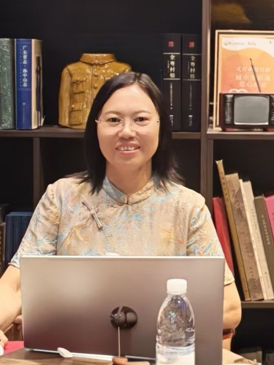

中学一线从教三十多年，其中当班主任二十多年。把儿子培养成一个爱运动、好唱歌、喜交际的阳光男孩，他也很快将在新加坡国立大学博士毕业。
More than thirty years teaching on the front line of secondary school, over twenty of them as a class head-teacher. I raised my son into a sporty, singing, sociable and sunny young man — who will soon finish his PhD at the National University of Singapore.
见过许多孩子的优秀，也见过好多孩子的各种问题，深知生儿育女的不容易。跟随王德生老师学习多年，我越来越确信：教育路上，最该学习的是父母。
I have seen many children shine, and many children struggle; I know how hard it is to raise a child. After years of study with Mr. Wang Desheng, I am ever more certain: on the path of education, the ones who most need to learn are the parents.
我把几十年的故事，加上王老师的发生学理论，变成一篇篇文章——每一篇我都花一两天去打磨。希望对正在培养孩子的家长们，有少少帮助。
I turn decades of stories, together with Mr. Wang’s generativics, into essays — each polished over a day or two. I hope they can be of some small help to parents raising their children.
雷建华的写作面向家长，用最家常的比喻讲最要紧的教育道理，但其底层是一套关于成长如何发生的连贯思考。他反对把孩子当作文件夹式的知识容器，主张把孩子培养成维度彼此纠缠、拆开就死的麻辣烫；他提醒家长别忙着发现天赋，因为提前命名会剥夺孩子自己显影的机会；他也反对把孩子冻住，主张让生命之流自然涌动。
在这些通俗随笔里，他持续处理几个真问题：读书为什么必须输出（否则如同在岸上学游泳）、如何给孩子一片让美好自然发生的艺术沃土、如何真正戒掉沉迷（靠给现实世界一束生命之火而非堵）、以及一个本科男生临阵脱逃的怕里藏着多少教育暗伤。他的文章不用学术腔，却始终贯穿着 SDE 发生学的内核——好的教育不是塑造与填装，而是为孩子自己的发生护出条件与空间。
他的方法是把 SDE 发生学的深意，翻译成家长听得懂、用得上的家常话。他从不居高临下地讲道理，而是用麻辣烫、显影、游泳这样的比喻，让人一下子看见问题的要害。贯穿其全部文章的价值，是同一个信念——好的教育不是塑造与填装，而是为孩子自己的发生护出空间。